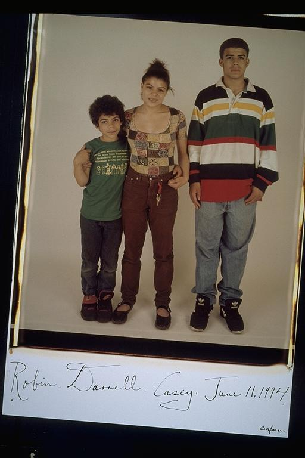

Pals: Boys Who Grew Up Together
elsadorfman.com/pals
Casey: This picture is very special to me. It is the only group picture with me with anyone besides the crew. The girl is my younger sister, Darrell, and the boy is my younger brother, Robin. Although we have had our differences, this picture shows how close we really are. Another one of these pictures is in my mother's living room in upstate New York, where my brother and mother live as a testament to the three bi-racial siblings.
Aldo: This is mighty Casey's family. I never knew his family too well, but they did live in Cambridge, so I'd seen them since I was a kid. Casey has been a good friend since back in the day, but I really got to know him better once I started high school.

elsad@comcast.net